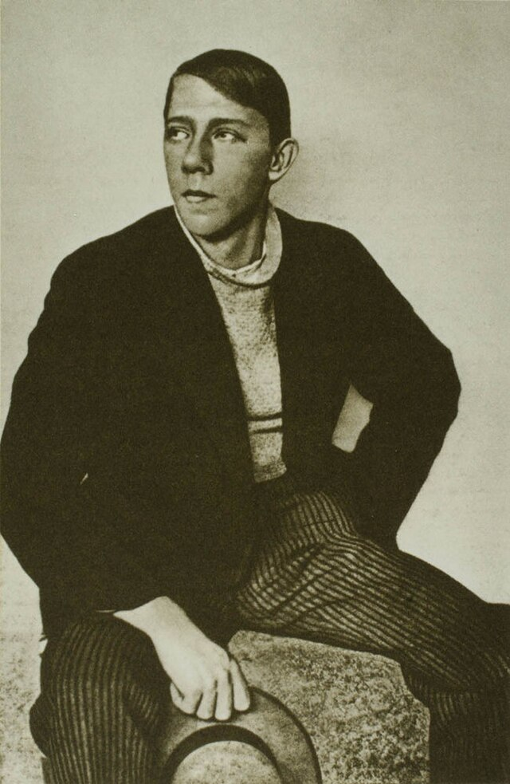
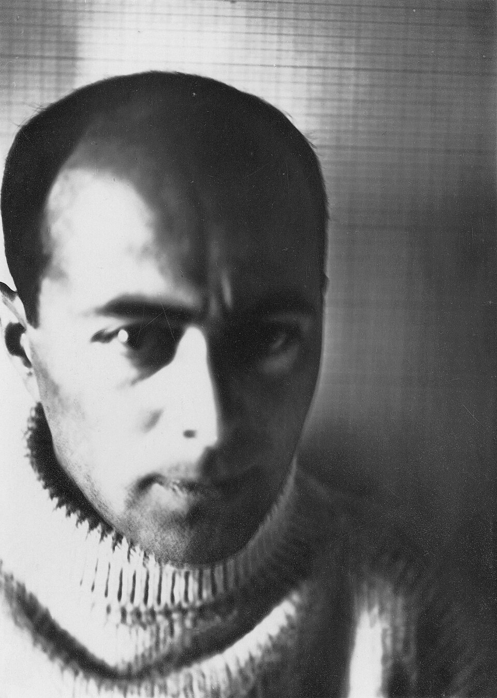
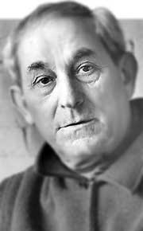

Vladimir Tatlin: (1885–1953) fue uno de los grandes pioneros del constructivismo ruso. Artista, arquitecto y diseñador. Defendía que el arte debía ponerse al servicio de la vida cotidiana y la revolución.

El Lissitzky: (1890–1941) fue un artista, arquitecto, diseñador gráfico y tipógrafo ruso. Arquitecto e ilustrador. Buscaba integrar todas las artes (pintura, arquitectura, tipografía, diseño) en una síntesis total.

Antoine Pevsner: (1884 – 1962) fue un escultor ruso-francés, considerado una de las figuras centrales del constructivismo junto con su hermano Naum Gabo.

Naum Gabo: (1890–1977) fue un escultor y teórico ruso. Trabajó junto a su hermano Antón Pevsner, con quien compartió ideas y proyectos.Creía que el artista debía actuar como un inventor en diálogo con la ciencia y la tecnología.